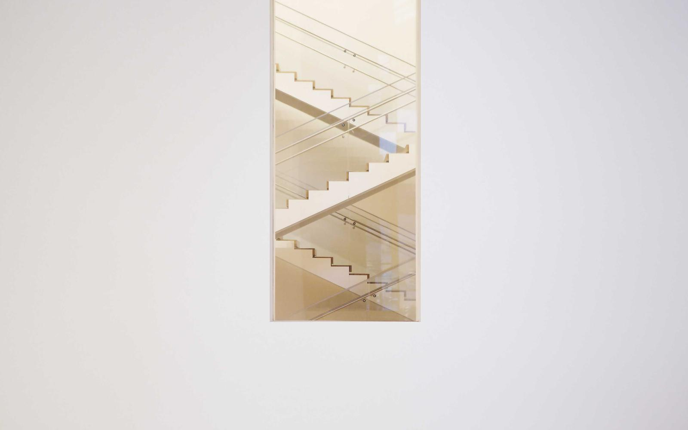

ПРАКТИКА И КЕЙСЫ 1С
Открыть детальный разбор решений ↓РАЗБОР РЕШЕНИЙ 1С
Выберите задачу — от быстрых доработок СКД и обменов в малом бизнесе до миграции на КА 2.5 / ERP и оптимизации тяжёлых баз.
ИНТЕГРАЦИЯ 1С С WILDBERRIES, OZON И ЯНДЕКС.МАРКЕТ
Конфигурации: 1С:УТ 11.5 · 1С:КА 2.5 · 1С:УНФ 3.0 · 1С:БП 3.0
- Убрал ручную перебивку Excel-отчётов Wildberries и Ozon: все продажи, возвраты, логистика, хранение, штрафы, СПП и удержания загружаются в 1С напрямую по API.
- Собрал управленческий отчёт на СКД по реальной чистой марже каждого артикула (SKU) с учётом себестоимости партии, налогов и всех удержаний площадки.
- Автоматизировал рабочее место упаковки на складе: сборка сборочных заданий и печать этикеток FBS/FBO со штрихкодами в один клик из 1С.
- Прямой обмен через HTTPСоединение и REST API (JSON) с обработкой лимитов запросов, пагинации и автоматическим докачиванием пропущенных пакетов.
- Вся логика вынесена в отдельное Расширение (CFE) и внешние обработки — типовая конфигурация остаётся на замке и обновляется штатно.
- Корректное отражение отчётов комиссионера в регламентированном учёте (БП 3.0 / УСН с НДС 5%/7%/20% и ОСНО).
КОНФИГУРАЦИИ И ИНЖЕНЕРНЫЙ СТЕК
Чистая разработка через Расширения (CFE) и БСП с сохранением типовой поддержки

ФОРМАТЫ РАБОТЫ ПО ГПХ / СЗ / ИП
Формат 1: Поддержка и доработки для малого бизнеса
Для компаний на 1С:УНФ, УТ 11, БП 3.0 и Рознице: быстрые отчёты на СКД, печатные формы (УПД, ТОРГ-12, QR, этикетки), настройка НДС 5%/7% на УСН, починка обменов УТ ↔ БП и загрузка из Excel в день обращения.
Формат 2: Свой разработчик 1С «в единственном числе»
Полное ведение контура 1С компании (УТ 11.5, КА 2.5, БП 3.0, ЗУП 3.1) вместо дорогого франчайзи: расширения CFE, прямые API-интеграции с Ozon / Wildberries / Битрикс24 / ТСД, Честный Знак и ЭДО.
Формат 3: Архитектура, переход на КА 2 / ERP и Highload
Проекты миграции с УТ 10.3 / УТ 11 / УПП на КА 2.5 и ERP 2.5 с полной автосверкой бухоборотов до рубля, устранение взаимоблокировок MS SQL / PostgreSQL и выгрузка P&L в ClickHouse / BI.
Прозрачное оформление: ГПХ, Самозанятость или ИП
Работаю напрямую без посредников: договор ГПХ, чеки самозанятого (НПД) или договор и закрывающие акты ИП. Оцениваю задачу за 15 минут в Telegram @e5asher и делаю сначала на копии базы.
ОПЫТ И КВАЛИФИКАЦИЯ
Объединяю глубокое знание предметной области (бухгалтерский и налоговый учёт, НДС, себестоимость, складская логистика, ЗУП) с чистой инженерной разработкой на платформе 1С 8.3. Не ломаю типовую архитектуру, общаюсь с главбухом и директором на одном языке и сдаю задачи с первого раза.
- Проектная практика и сопровождение 1С (КА 2.5, ERP, УТ 11, БП 3.0) 2023 – наст.
- Торгово-логистическая группа Грум Айти · Ведущий разработчик 1С 2021 – 2023
- 7 Деталей (оборот 1,8 млрд ₽) · Разработчик 1С (УТ 11, КА 2, БП 3.0) 2019 – 2021
- Внедренческий центр 1С (40+ баз клиентов МСБ: опт, розница, УНФ) 2016 – 2019
- ВГУ · Факультет прикладной математики, информатики и механики Высшее ИТ
- 1С:УТ 11.5 · 1С:КА 2.5 · 1С:ERP 2.5 · 1С:УНФ 3.0 · 1С:Розница Оперучёт
- 1С:Бухгалтерия 3.0 (ОСНО / УСН НДС 5–7%) · 1С:ЗУП 3.1 Реглучёт
- СКД · Управляемые формы · Расширения (CFE) · БСП · Печатные формы Платформа 8.3
- КД 2.1 / КД 3.0 (EnterpriseData) · HTTP/REST API · JSON/XML · РИБ Обмены и API
- Ozon / WB API · Честный Знак (ГИС МТ) · ЭДО Диадок/СБИС · ТСД Маркировка и МП